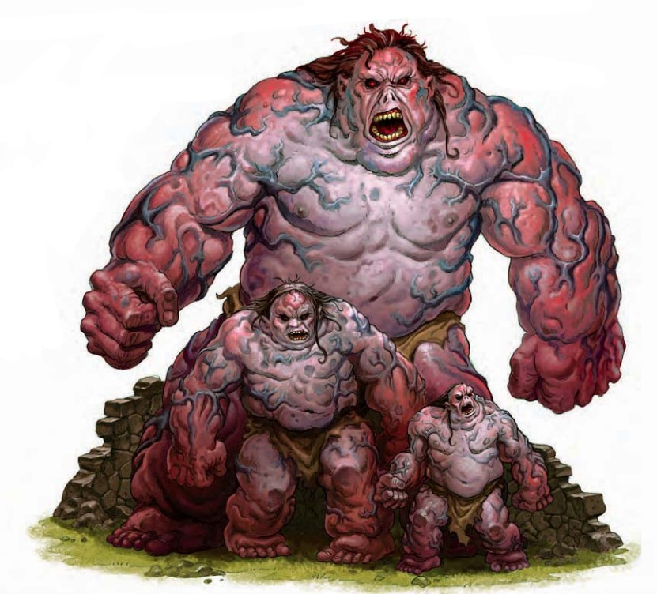

血躯壮汉是一种活化的尸体。它们在一种黑暗而恐怖的仪式中，通过浸泡在无辜受害者的鲜血里制成。它们肿胀的身躯中充满了粘稠的血块与不洁的流体，这给了它们在被击倒前吸收惊人伤害的耐久力。
虽然血躯战士（Bloodhulk Fighter）是这种不死生物最常见的形态，死灵师与邪恶的牧师们有时也会创造出更大，更凶恶的版本，例如血躯巨人（Bloodhulk Giant）和血躯碾压者（Bloodhulk Crusher）。
遭遇范例冒险者们最常在第二道防线的守卫中遭遇血躯系列怪物。这些生物可以单独出现，也可以组成小队出现。
单独遭遇（EL 4-8）
单独一只血躯壮汉通常作为守卫，负责在整体警报拉响时延缓入侵者的脚步。
・ EL 4：一名血躯战士守卫着一座藏于地下城中的厄瑞斯努神殿入口。如果它发现入侵者，会走向一面巨大的铜锣并每轮敲击它，除非遭到攻击――此时它才会以同样的方式反击。铜锣的响声会警告神殿中的居民。
巡逻队（EL 6-10）
当以群体形式部署时，血躯壮汉会构成一道令人生畏、几乎无法突破的防线。
・ EL 9：一对血躯巨人堵住了地下城中一条40英尺宽的走廊。它们把守着通道，防止冒险者或游荡怪物打扰一名熊地精死灵师及其助手。这名死灵师和随从正在地下城内挖掘一座隐藏的墓穴。
保镖（EL 10-20）
一位高阶祭司或死灵师可能会带着一名或多名血躯壮汉，作为抵御物理攻击的"肉盾"。
・ EL 13：一位12级的海克斯托牧师将两名血躯战士和一对血躯碾压者作为私人保镖。这些怪物在他施法时将他围在中间。碾压者的长触及可以拍打任何靠近牧师的敌人，而战士则保护他的侧翼，使敌人无法接近他。
生态血躯壮汉完全没有心智。它们悲惨的存在取决于创造者的兴致，而它们的毁灭也无足轻重（尽管令人不快地肮脏）。创造一个血躯壮汉需要一个以血腥牺牲为高潮的仪式，最终施放一个操纵死尸法术。大多数有形体的活物都可以被制造成这种恐怖生物。
环境作为被创造出来的生物，血躯壮汉可以在任何环境中找到。它们通常巡逻于阴森的庙宇、腐朽的墓穴以及奉献给渎神仪式的区域。一些施法者表现出偏好创造血躯壮汉，而非更标准的不死仆从。特别是专精死灵系的邪恶血灵师（《完美奥术》26页）无法抗拒使用血液的创新方法。
典型身体特征血躯壮汉的外表令人作呕，类似于肿胀的、肌肉纠结的尸体，皮肤下有脓液涌动的血管在蠕动。它们散发着溃烂伤口般的恶臭，移动时会发出令人不安的咕噜声。它们不穿盔甲，最多只覆盖着破烂的衣物碎片，因为它们已经撑破了生前的服装。血躯壮汉与典型生物具有相同的身高，但体型要粗壮得多。内部晃荡的大量血液使得血躯壮汉的重量是体型相当的基础生物的两倍。
阵营血躯壮汉无法进行独立思考或道德判断，因此其阵营为中立。然而，创造它们的可怕仪式、制造者的残忍以及被指派执行的严峻任务，使它们带上了邪恶的污染。因此，所有血躯壮汉均为中立邪恶阵营。
典型宝藏血躯壮汉是仆从，本身不拥有任何宝藏，尽管它们可能被设置去守护贵重物品。即使是那些曾经是战斗冠军的血躯壮汉，也不再穿戴任何盔甲残片，也不挥舞武器。
对玩家角色操纵死尸法术通常只允许创造骷髅和僵尸。它也可以创造血躯壮汉，尽管过程更为困难。你可以创造血躯战士、血躯巨人或血躯碾压者，这完全取决于你想要赋予生命的尸体的体型：创造血躯战士需要一具中型尸体，血躯巨人需要大型，血躯碾压者需要超大型。更小或更大的尸体无法被制成血躯壮汉。创造血躯壮汉的过程对原始尸体的改变过大，以至于它无法保留大部分原有特征。
除了通常的法术材料成分外，你还必须提供三具最近被杀死的、体型与目标血躯壮汉相同的生物的血液。在创造和控制血躯壮汉时，其生命骰数视为双倍。因此，如果你不在亵渎区域内，你能创造的血躯壮汉数量等于你的生命骰数（而非两倍于你的生命骰数）。你每施法者等级所能控制的血躯壮汉生命骰数不超过2生命骰；如果你试图控制不同类型的不死生物，在确定你能控制的不死生物总数时，血躯壮汉的生命骰数视为其条目中所示数值的两倍。
艾伯伦中的血躯壮汉一些监守的崇拜者在奉献给死亡与腐朽之主的仪式中创造血躯壮汉。这些异常肿胀的生物被认为反映了这位黑暗之神的身形。卡纳斯的牧师可能知晓创造血躯壮汉的仪式，但绝不会将其用于他们的军队。这种毫无荣誉可言的畸形怪物，不配与那些死后仍为国家服务的不知疲倦的士兵并肩。
费伦中的血躯壮汉国度中最臭名昭著的死灵师是萨扎斯坦，塞尔的死灵系首席。除了为塞尔的军队创造恐惧战士（《费伦的怪物》46页）之外，他近年来一直在实验其他形式的不死生物。血躯壮汉是"回收"他死灵研究废弃产物的有用方法。萨扎斯坦以魔法研究者的冷漠无情来构造血躯壮汉。所需的生物被迅速屠杀、放血并赋予生命。维沙伦是不死生物的守护神和创造者，对其崇拜的教团遍布整个费伦。这些黑暗仆从中的一些会用捕获的城镇居民制造血躯壮汉，并将这些肿胀的仿制品送回，以折磨和恐吓他们的亲属。
血躯战士 CR 4它也许是个人类――曾经是。现在它是一团肿胀的恶物。膨胀的静脉在它铁青色的表皮上蔓延伸展开来，腐烂的衣服残片是它鼓鼓囊囊的身体上仅有的遮挡物。它用空洞的眼睛盯着你，同时摇晃着硕大的拳头蹒跚向前。
| 资料栏位 | 血躯战士 中型不死生物 |
|---|---|
| 生命骰 | 10d12+20（140HP） |
| 先攻 | -1 |
| 速度 | 20尺 (4格) |
| 防御等级 | 11(-1 敏捷，+2天生)，接触9，措手不及11 |
| 基本攻击/擒抱 | +5/ +8 |
| 攻击 | 近战 挥击+8(1D8+4) |
| 全力攻击 | 近战 挥击+8(1D8+4) |
| 面宽/触及 | 5尺/ 5尺 |
| 特殊攻击 | ― |
| 特殊能力 | 血肿，不死生物特性，脆弱身躯，不死生物免疫，黑暗视觉60尺，昏暗视觉 |
| 豁免 | 强韧+3，反射+2，意志+7 |
| 属性 | 力量16，敏捷9，体质 ― ，智力 ―，感知10，魅力1 |
| 技能 | 聆听 +0， 侦查+0 |
| 专长 | ― |
| 环境 | 见后文（未翻） |
| 组织 | 见后文（未翻） |
| 挑战等级 | 4 |
| 宝物 | 无 |
| 阵营 | 总是中立邪恶 |
| 进化 | 见文本 |
| 等级调整 | ― |
血躯战士理解其创造者的命令。
战斗脆弱身躯（Fragile）（Ex）：每当血躯战士受到至少1点挥砍或穿刺伤害时，它受到额外1D6点伤害。
血肿（Blood Bloated）（Ex）：血躯战士在每个生命骰都获得最大的生命值。此外，它的每个生命骰给予它2点额外生命值。
这个高大、肿胀的巨人的皮肤看上去好像要爆开一般。粗大的血管在它的身体上蔓延、跳动、并随着大量的体液不停地浮动。
| 资料栏位 | 血躯巨人 大型不死生物 |
|---|---|
| 生命骰 | 14d12+28（196HP） |
| 先攻 | -1 |
| 速度 | 20尺 (4格) |
| 防御等级 | 13(-1体型，-2敏捷，+6天生)，接触7，措手不及11 |
| 基本攻击/擒抱 | +7/ +22 |
| 攻击 | 近战 挥击+17(2D6+16) |
| 全力攻击 | 近战 挥击+17(2D6+16) |
| 面宽/触及 | 10尺/ 10尺 |
| 特殊攻击 | ― |
| 特殊能力 | 黑暗视觉60尺，昏暗视觉，不死生物免疫，血肿，不死生物特性，脆弱身躯 |
| 豁免 | 强韧+4，反射+2，意志+9 |
| 属性 | 力量33，敏捷6，体质 ― ，智力 ―，感知10，魅力1 |
| 技能 | 聆听 +0， 侦查+0 |
| 专长 | ― |
| 环境 | 见后文（未翻） |
| 组织 | 见后文（未翻） |
| 挑战等级 | 6 |
| 宝物 | 无 |
| 阵营 | 总是中立邪恶 |
| 进化 | 见文本 |
| 等级调整 | ― |
血躯巨人是血躯战士的更大，更强壮的版本。它可以吸收数十次攻击，这使得它可以作为理想的守卫或者保镖。死灵师，邪恶牧师和其他邪恶施法者在用自己的法术攻击时会利用血躯巨人挡开敌人。
血躯巨人理解其创造者的命令。
战斗脆弱身躯：同血躯战士。
血肿：同血躯战士。
血躯碾压者 CR 8一个扭曲而肿胀的，有如城堡的高塔一般庞大的身躯在你面前赫然耸现。它肥大的身躯被粗大、绳状、颤动、输送着粘稠血液的血管所复盖。它居高临下，用自己空洞的眼睛看着你。
| 资料栏位 | 血躯碾压者 超大型不死生物 |
|---|---|
| 生命骰 | 20d12+40（280HP） |
| 先攻 | -2 |
| 速度 | 30尺 (6格) |
| 防御等级 | 14(-2体型，-2敏捷，+8天生)，接触6，措手不及14 |
| 基本攻击/擒抱 | +10/ +34 |
| 攻击 | 近战 挥击+24(3D6+24) |
| 全力攻击 | 近战 挥击+24(3D6+24) |
| 面宽/触及 | 15尺/ 15尺 |
| 特殊攻击 | ― |
| 特殊能力 | 脆弱身躯，黑暗视觉60尺，昏暗视觉，不死生物免疫，血肿，不死生物特性 |
| 豁免 | 强韧+6，反射+4，意志+12 |
| 属性 | 力量43，敏捷6，体质 ― ，智力 ―，感知10，魅力1 |
| 技能 | 聆听 +0， 侦查+0 |
| 专长 | ― |
| 环境 | 见后文（未翻） |
| 组织 | 见后文（未翻） |
| 挑战等级 | 8 |
| 宝物 | 无 |
| 阵营 | 总是中立邪恶 |
| 进化 | 见文本 |
| 等级调整 | ― |
作为这种不死生物最强力的版本，血躯碾压者是一个"活生生"的毁灭制造机。邪恶牧师们使用这些野兽作为会走路的战争机器。它们令人匪夷所思的耐久力与强大的力量让它们可以乱拳打垮城堡的大门，打碎房屋，压垮更小的生物。
血躯碾压者理解其创造者的命令。
战斗脆弱身躯：同血躯战士。
血肿：同血躯战士。
策略与战术虽然它面对挥砍和穿刺伤害的脆弱给了冒险者对抗它的优势，血躯壮汉还是可以吸收大量的打击。这只肿胀的无心智傀儡摇摇晃晃地行进，毫无思考地听从创造者的命令行事。由于它智力上的绝对缺陷，给予新创造出的血躯壮汉的命令必须十分简单，例如"搞死任何进入这间房间的人。"
冒险者可能遭遇单个，或者成群的血躯壮汉，这视它们创造者的命令与它们的目的而定。他们惊人的力量与吸收伤害的能力使得它们可以作为有用的守卫，因为它们比僵尸更强韧，却不如血肉魔像那么昂贵复杂。在死灵师的藏身处，或者邪恶的死亡神�o的神庙中常常可以发现拖着身子的血躯壮汉和其他次等不死生物。
大多数驱使血躯壮汉的邪恶施法者把它们当做保镖。当血躯壮汉挡住一队冒险者时，它们的主人可以向冒险者们身上倾洒法术与远程攻击。血躯壮汉的持久力使它可以承受住同时攻击它与它的对手的区域攻击。大多数状况下，这种不死生物比它的对手更抗打。
血躯壮汉学识在知识（宗教）上有级数的人物可以更多地了解血躯壮汉。当人物成功通过技能检定时，以下知识将被揭示，其中包括了更低DC的信息。
| 知识（宗教） | 结果 |
|---|---|
| DC 10+CR | 这是血躯壮汉，一种无心智的不死生物。它可以承受大量的物理伤害、这个结果揭示了其所有不死生物特性。 |
| DC 15+CR | 血躯壮汉是通过进行一种将生物的血肉浸泡在被献祭者的鲜血中，从而得以进行的邪恶仪式而创造出来的。 |
| DC 20+CR | 血躯壮汉的身体充满了血液。当它受到锋利武器的攻击时，它的血肉将会破裂开来。 |